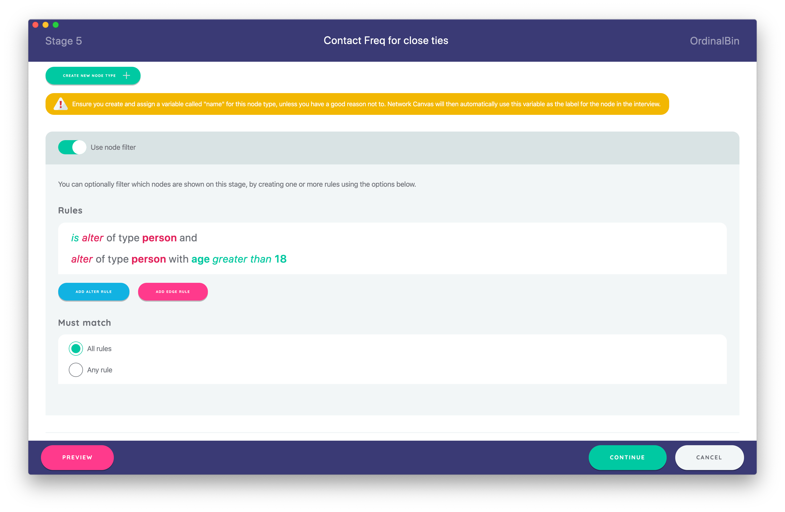
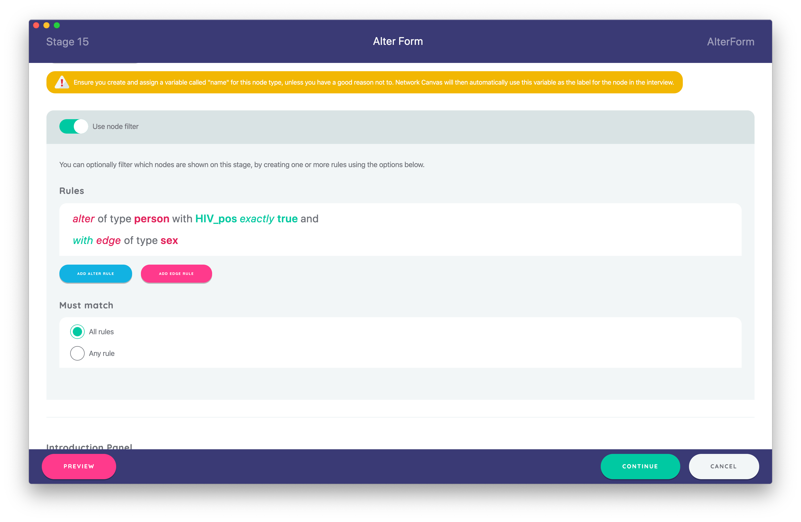
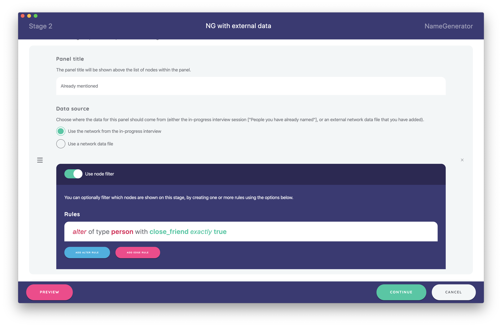

Network Filtering
This feature allows you to only show a subset of nodes or edges on a given interview stage based on their attributes.
Details
Network filtering is a configuration feature you will find in several areas of Architect. Simply put, it allows you to define one or more rules that determine which nodes or edges should be shown on a given stage (or in a side panel - see below). It can be used to only show a subset of the network.
This is particularly useful in cases where the content of the stage does not apply to all network entities. Consider the example of an interview protocol with two stages - a Name Generator, and an Ordinal Bin. On the first stage, for each alter named the participant is asked if they play sports with the individual. The second stage asks “how often do you play sports with each of these people?”. Filtering the network for this second stage to show only those alters with the “plays sports with” attribute will reduce the response burden of the task, and will make the interview protocol more efficient.
Network filtering is different from skip logic! Although the two sound similar in principle, they achieve very different design goals. Whereas network filtering determines which nodes to show within a stage, skip logic determines if a stage should be shown at all. Consult the article on skip logic to learn more.
Configuring Network Filtering on a Stage
To configure network filtering within a stage, open the stage from the timeline view, and toggle the switch to enable “Network Filtering”. From here, you have the ability to create one or more rules (of type alter or edge), as well as to set the join operator by determining if “all rules”, or “any rule” must match.

Network filtering is only available on name interpreter interfaces - interfaces that add attributes to nodes or edges. It is not available on specialist name generator interfaces.
Filtering Rules
Similar to skip logic rules, filtering rules have two types that can be targeted at either nodes or edges:
- “Presence” Rules: These rules allow you to query if a given entity of a specified type exists in the network, using either the
existsornot existsoperator. This rule type is not generally useful for most typical filtering operations, but can be used when roster data contains nodes or edges of multiple types. - “Attribute” Rules: These rules allow you to query the value of a variable on a given entity type. For example, you may query the value of a variable called
ageon an alter type called ‘Person’. You can evaluate the result using one of several logical operators, that vary depending on the variable type. For example, number variables will let you query using operators such as ‘greater than’ and ‘less than’.
Unlike skip logic rules (which are aggregated into an overall boolean true or false value), filter rules are applied to each node and edge in the network, and are not aggregated. Instead, the nodes that remain are those that satisfy the rule constraints.
It is important to remember that filtering retains the validity of the network model: the returned network will not contain orphaned nodes when using an edge query, or partially disconnected edges, since these are not phenomenologically valid.
The Join Operator
Rules are chained together (or ‘joined’) using either AND or OR logic, which is set in the network filter configuration section using the “Must match” options “all rules” and “any rules” respectively. These methods behave much as you might expect. In the context of a filter operation:
ORsignifies that if a node or edge meets any individual rule criteria, it will be returned in the overall network.ANDsignifies that nodes and edges in the returned network should satisfy the criteria from all rules.
This means that the choice of join operator can have an extremely significant impact on the way that your rules are collectively evaluated. You should be careful to only use the AND operator to chain together multiple required property values when all values are simultaneously required on a single node.
Extended Example
Since network filtering can be confusing to new users, here is an extended example to illustrate the feature that includes both node and edge rules.
Consider an interview where you use the Sociogram to generate sex ties between alters and to collect boolean attribute data on HIV status of alters. Let’s imagine that you then want to use a Per Alter Form or another name interpreter to capture data on drug use behavior of alters, but only those who are HIV positive and who have a sex relationship with another alter in the network.
To achieve this using network filtering, we implemented the following edge and node rules on the Per Alter Form:

Applying these rules within this stage determines that only HIV+ nodes who have a sex relationship will be shown. All nodes that do not have a sex relationship will be filtered out - even if they have attribute HIV_pos = true.
If your filter query (the sum of all defined rules within the stage) includes an edge rule, you will also filter alters. For example, if your rule is set to filter the existence of an edge type, such as ‘sex’, any nodes that would become isolates as a result of this query are removed from the filtered network.
Network Filtering in a Side Panel
You also have the ability to filter the content of Name Generator side panels (where they are used). This features works exactly the same way as stage level network filtering, except that the results are only applied to the specific side panel you are configuring. Any filtering you set will apply across all prompts for that stage.
This feature can be particularly useful if you wish to filter elements of a roster. For example, your roster may contain an attribute that represents graduation year that you could use to filter the side panel content for a question about classmates known from a certain year group.
